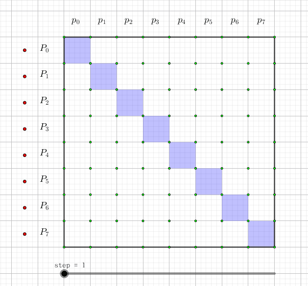

给定两个长度为 $n$ 的序列 $a_0, a_1, \cdots, a_{n-1}$ 和 $b_0, b_1, \cdots, b_{n-1}$，你需要求出一个序列 $c_0, c_1, \cdots, c_{n-1}$，其中 $c_k$ 满足：$c_k = \sum\limits_{i \mid j = k} a_i b_j$。其中 $\mid$ 表示按位或。
第一行一个整数 $n$ ($n \leq 10^6$)，表示序列长度。
第二行 $n$ 个整数 $a_0, a_1, \cdots, a_{n-1}$，表示第一个序列。
第三行 $n$ 个整数 $b_0, b_1, \cdots, b_{n-1}$，表示第二个序列。
输出一行 $n$ 个整数，表示你得到的序列。
显然发现 $i \mid j = k$ 这个条件不怎么好处理，如果我们作一个集合的 "前缀和"，即令 $P_i = \sum\limits_{j \subseteq i} p_j$ (即 $i \;\&\; j = j$)，那么有
$$ C_k = \sum_{k_0 \subseteq k} c_i = \sum_{k_0 \subseteq k} \sum_{i \cup j = k_0} a_i b_j = \sum_{i \cup j \subseteq k} a_i b_j = \left( \sum_{i \subseteq k} a_i \right) \left( \sum_{j \subseteq k} b_j \right) = A_k \cdot B_k $$
也就是说，它们的 "前缀和" 有着非常美妙的 "点值" 性质 (可以回忆一下 FFT)，于是可以在 $O(n)$ 时间内从 $A_i, B_j$ 得到 $C_k$。而暴力求 "前缀和" 复杂度是 $O \left( n ^ {\log_2 3} \right)$ 的，显然过不去，因此考虑通过 "快速变换" 从 $p_i$ 得到 $P_i$ 以及逆变换 (和 FFT 好像啊)。
究竟怎么变换呢？我们可以画一张图，图中每一行代表一个 $P_i$，这一行有哪些格子涂蓝，就代表它是哪些 $p_i$ 的和，如下图所示：
可以发现，每次，只要枚举每个元素 (与枚举元素的顺序无关)，然后把包含这个元素的 $i$，对应的 $P_i$ 加上把 $i$ 去掉后的集合对应的 $P_{i'}$。这样做 $O(\log n)$ 次操作后，即得到变换后的值。
那逆变换怎么办呢？如何从 $P_i$ 得到 $p_i$？可以发现我们能利用容斥原理，比如说对于 $6$，那么就有 $p_6 = P_6 - P_4 - P_2 + P_0$。将这个 $6$ 一般化，我们就有 $$ p_i = \sum_{j \subseteq i} (-1)^{|i| - |j|} P_i $$
注意 $i, j$ 是集合 (所代表的数)。
这显然不能用定义取计算，还是要寻找 "快速逆变换"。机智的同学可能已经发现，将上面动画中的过程倒着做就可以了，即枚举每个元素，然后对于包含这个元素的 $i$ 所对应的 $P_i$ 减去 $P_{i'}$ 就可以达成目标。
综上，我们可以在 $O(n \log n)$ 的时间内完成 "集合并卷积"，它有一个优美的名字，叫做快速 Möbius 变换 (FMT)，比暴力好多了 (其实本质就是个容斥)。
#include <bits/stdc++.h>
#define N 1109771
#define lg2(x) (31 - __builtin_clz(x))
using namespace std;
typedef long long ll;
int n, len, i;
ll a[N], b[N], c[N];
void FMT(ll *f){ // Fast Mobius Transform
int i, j;
for(i = 0; i < len; ++i)
for(j = 0; j < 1 << len; ++j)
if(!(j >> i & 1))
f[j | 1 << i] += f[j];
}
void IFMT(ll *f){ // just an IE-principle
int i, j;
for(i = 0; i < len; ++i)
for(j = 0; j < 1 << len; ++j)
if(!(j >> i & 1))
f[j | 1 << i] -= f[j];
}
int main(){
scanf("%d", &n);
len = lg2(n - 1) + 1;
for(i = 0; i < n; ++i) scanf("%lld", a + i); FMT(a);
for(i = 0; i < n; ++i) scanf("%lld", b + i); FMT(b);
for(i = 0; i < 1 << len; ++i) c[i] = a[i] * b[i];
IFMT(c);
for(i = 0; i < n; ++i) printf("%lld%c", c[i], i == n - 1 ? 10 : 32);
return 0;
}
其实这个卷积像多项式乘法一样，也可以使用分治法完成，不过并不必暴力快多少。(可以参考上面的动画自己取实现以下)
坑1：注意变换时要保证 $n$ 是 $2$ 的幂，否则可能无法完全转换 (尤其是在下一题 "集合对称差卷积" 中)，可以像 FFT 一样在后面补 $0$ (让元素个数) 凑成 $2$ 的幂。